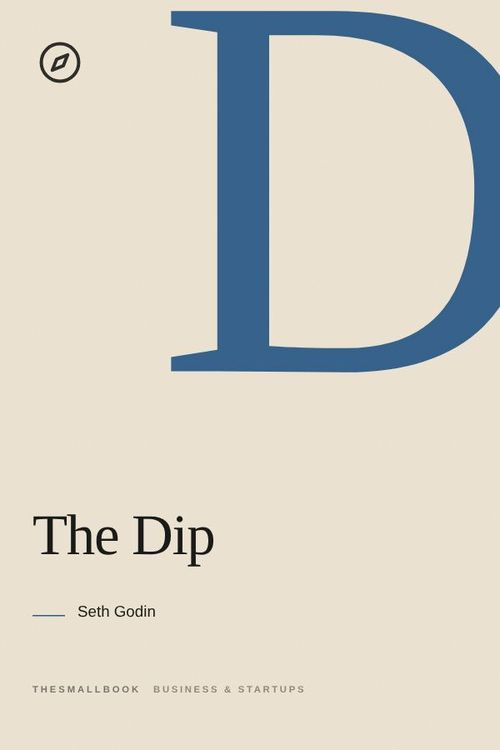

Library › Ask the Library › Should I quit my job / this thing?
Should I quit my job / this thing?
The short answer
Quitting is fine, quitting at the wrong time is the sin. Know the difference between a dip you can win and a dead end you can't.
The books behind the answer

The Dip
Seth Godin · 2007 · 8 min · 6 lessons
Every worthwhile pursuit has a Dip - the long slog between starting and mastery. Quit dead ends fast; lean into Dips that lead somewhere.
- The Three Curves: Dip, Cul-de-Sac, Cliff: If the market is growing and you can be best-in-niche, you're in a dip, outlast it. If not, quit smart.

So Good They Can't Ignore You
Cal Newport · 2012 · 8 min · 6 lessons
Don't follow your passion - bring it with you. Build career capital through deliberate practice, then cash it in for autonomy and mission.
- The Passion Trap: Quit to build rare skills, not to escape boredom. The escape hatch that doesn't teach you is a trap.

The 4-Hour Workweek
Timothy Ferriss · 2007 · 8 min · 6 lessons
Retirement is a broken 40-year bet. Redistribute the mini-retirements throughout life: Define, Eliminate, Automate, Liberate.
- Define: Fear-Setting Beats Goal-Setting: Quit INTO something specific. 'Just leaving' is not a plan; 'leaving to build X' is.

Company of One
Paul Jarvis · 2019 · 8 min · 6 lessons
Growth is not a strategy; it's a religion most businesses die converting to. Build a company that stays small on purpose and pays you in freedom.
- Question Growth: Bigger Is a Choice, Not a Law: You can build a company of one, if you design work that serves your life, not the reverse.
A failure that proves it
Why did Isaac Newton fail?
1720 · MONEY · Loss: £20,000 (his life savings)
Isaac Newton gambled his life savings on South Sea stock, and lost it all. Quitting a bad bet is wisdom, not weakness.
Intelligence doesn't protect you from greed - Newton himself said it: 'I can calculate the motion of heavenly bodies, but not the madness of people.' If the smartest man alive couldn't time a bubble, you can't either.
Questions people ask next
Can I read this in Hindi?
Yes. This answer is written in simple English. Open any linked book and choose Hindi or Hinglish to read the full lessons in your language, with audio where available.